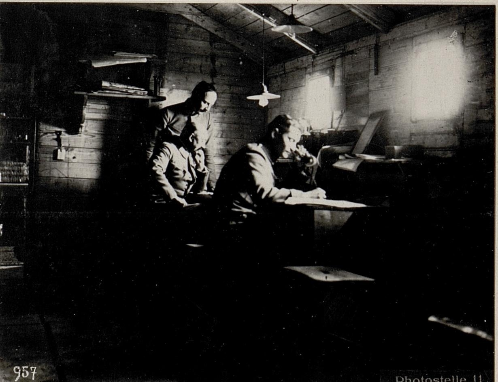
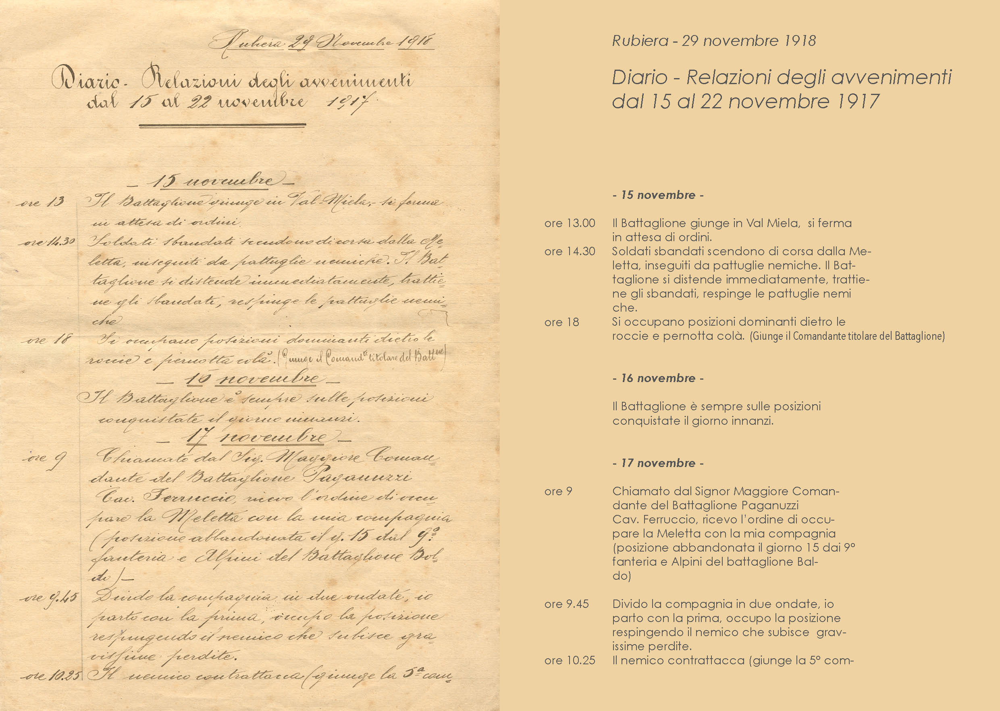
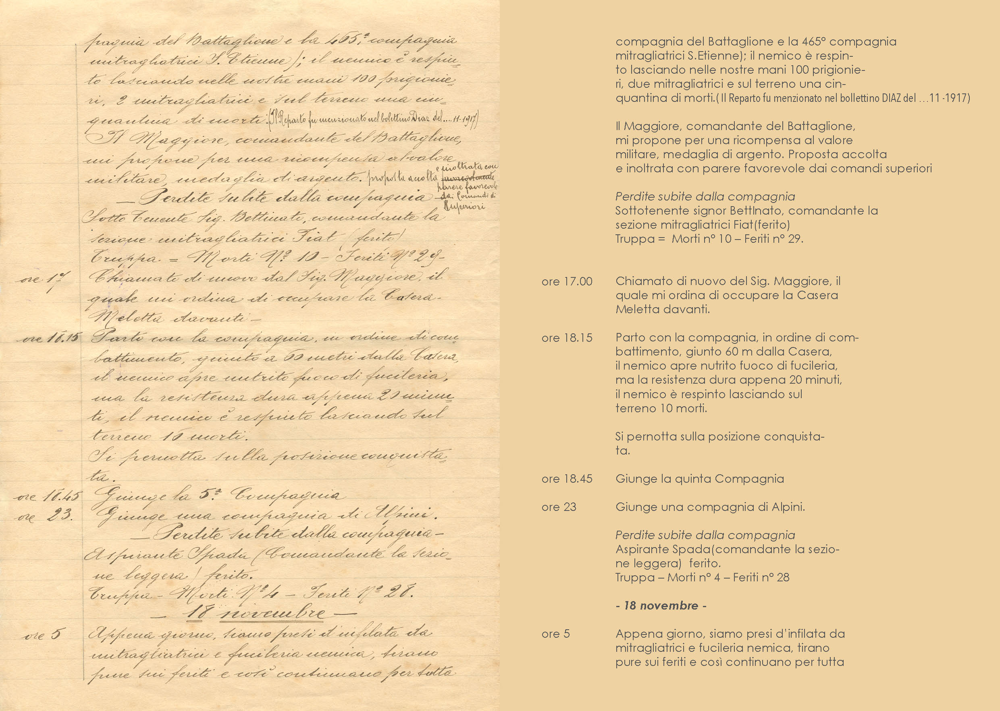
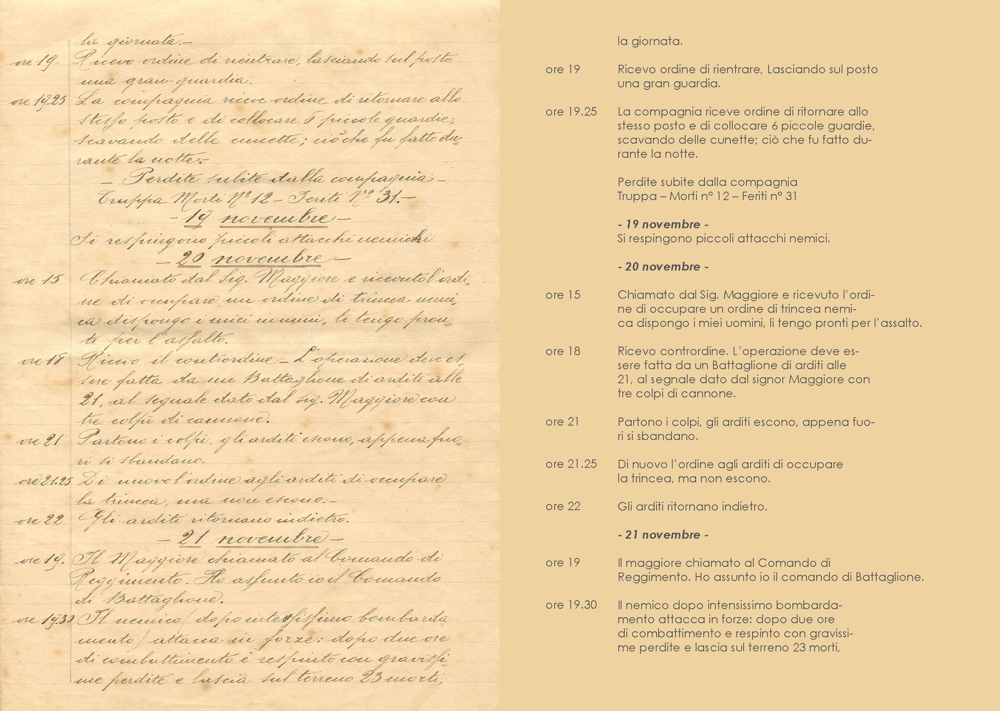
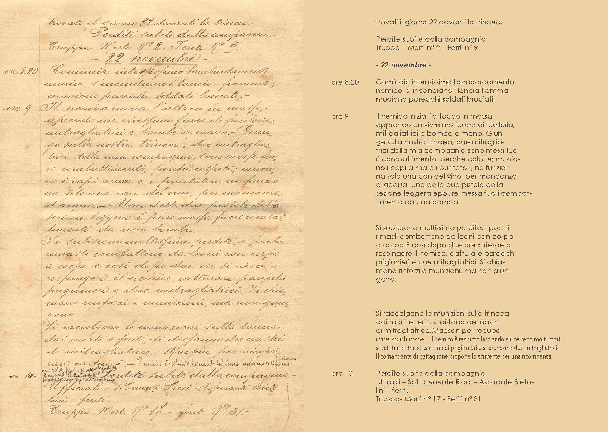
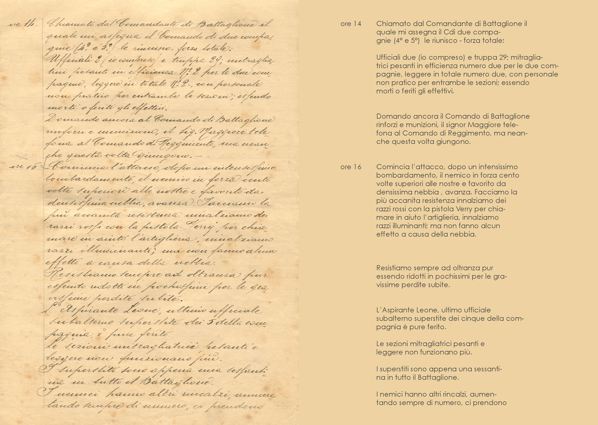
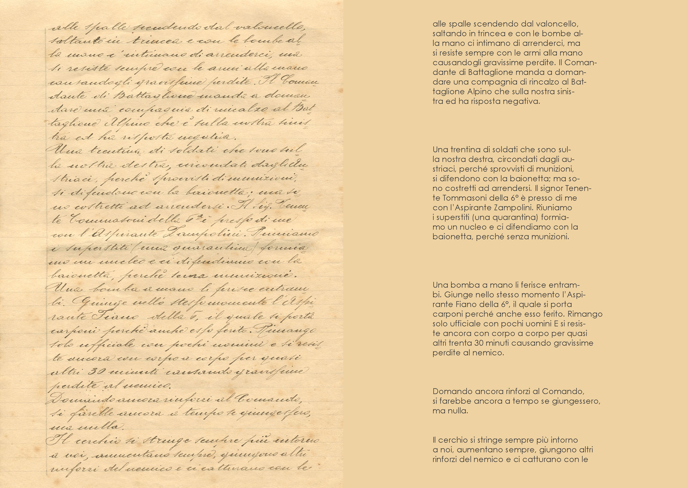
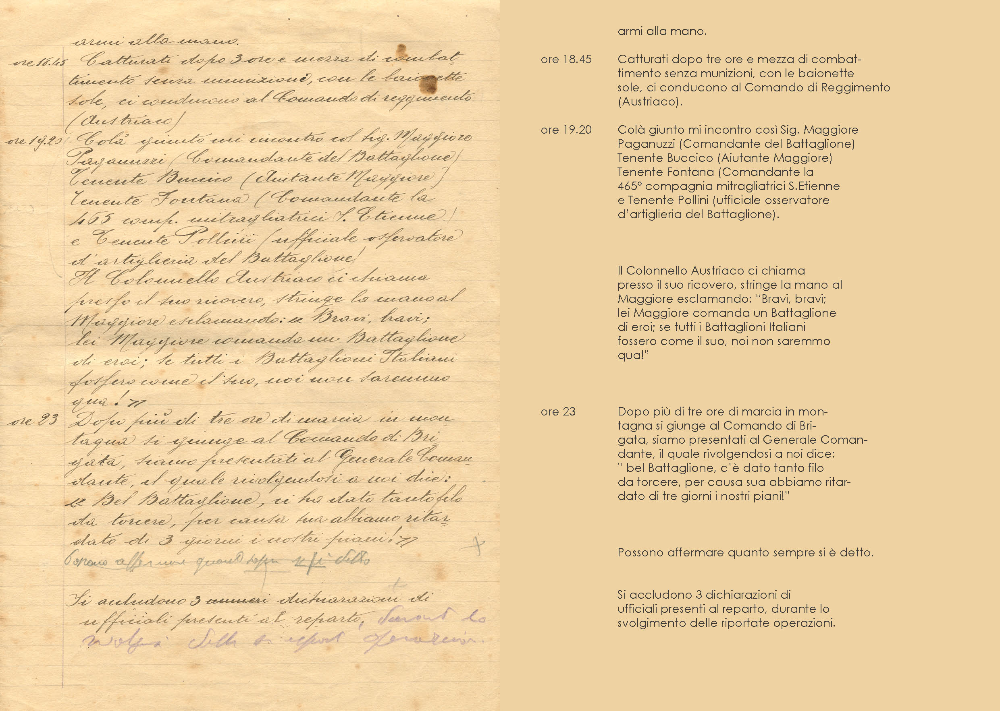
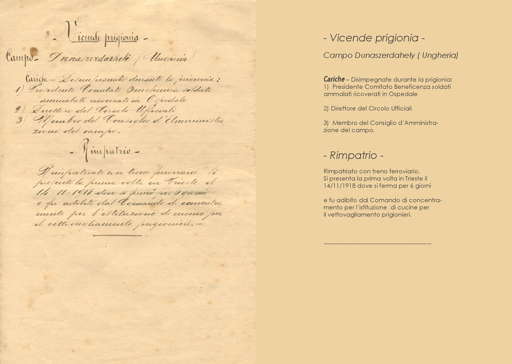

15–22 NOVEMBRE 1917 · ALTOPIANO DI ASIAGO
Otto giorni sulle Melette
La relazione di Giovanni Martinelli racconta l’arrivo in Val Miela, gli assalti e la difesa delle posizioni fino alla cattura. Leggerla accanto ai documenti militari aiuta a riconoscere i luoghi e a collocare la sua esperienza nella battaglia d’arresto seguita a Caporetto.
IL FRONTE E I LUOGHI
Dopo Caporetto, la difesa dell’Altopiano
Dopo lo sfondamento di Caporetto e il ripiegamento verso il Piave, anche il fronte dell’Altopiano di Asiago arretra, per raccordarsi alle difese del Grappa. La linea Sisemol–Stenfle–Zomo–Melette diventa uno dei settori della battaglia d’arresto del novembre e dicembre 1917. Le giornate di Giovanni appartengono a questa fase: la lotta sulle Melette proseguirà oltre il 22 novembre. [1]
La storia della Brigata Perugia, formata dal 129° e dal 130° fanteria, colloca il II battaglione del 129° in Val Miela il 15 novembre, inviato a rilevare reparti del 9° fanteria. Descrive poi contrattacchi il 17 e 18 e nuovi combattimenti dal 21. Questa sequenza offre un riscontro al quadro del diario; non dimostra da sola ogni episodio o ogni cifra riferita dall’autore. [2]
LA TESTIMONIANZA E LA STORIA
Le giornate del diario
Le sintesi del diario seguono la trascrizione conservata nell’archivio familiare. I riquadri di contesto rimandano a fonti distinte.
15–16 novembre · L’arrivo in valle
Nel diario di Giovanni
Il 15, alle 13, il battaglione arriva in Val Miela. Nel pomeriggio incontra soldati in ripiegamento dalla Meletta e si dispone sulle rocce. Il 16 mantiene le posizioni. Pagina 1 →
Nel quadro del fronte
Il bollettino del 16 novembre, riferito ai combattimenti del giorno precedente, menziona Meletta Davanti e Monte Fior e il ruolo della Brigata Regina. Il comunicato restituisce la visione del Comando Supremo sull’intero settore. [3]
17–18 novembre · Attacchi e posizioni contese
Nel diario di Giovanni
Il 17 Giovanni riceve l’ordine di occupare la Meletta e poi Casera Meletta Davanti. Seguono contrattacchi e rinforzi; il 18 descrive il fuoco nemico e la sistemazione di piccole guardie durante la notte. Pagine 1–3 →
Nel quadro del fronte
La storia della Perugia registra l’arrivo degli altri battaglioni del 129° il 17 e 18 e la ripresa dei contrattacchi, con l’impiego anche del 130°. Sono operazioni di reparto, da leggere accanto all’esperienza della singola compagnia. [2]
19–21 novembre · Ordini, attese e nuovi assalti
Nel diario di Giovanni
Il 19 sono respinti attacchi locali. Il 20 un assalto preparato dalla compagnia viene assegnato agli arditi. La sera del 21 Giovanni annota di aver assunto temporaneamente il comando del battaglione e racconta un nuovo attacco nemico. Pagina 3 →
Nel quadro del fronte
Dal 21 la ricostruzione della brigata descrive una nuova fase di lotta per la testata di Val Miela, protratta fino al 24. Il diario si interrompe prima della conclusione di questa fase. [2]
22 novembre · La cattura
Nel diario di Giovanni
Il racconto segue bombardamenti, assalti, richieste di munizioni e rinforzi. Nel pomeriggio riferisce la riduzione degli effettivi e la nebbia che ostacola i segnali. Annota la cattura alle 18.45 e il successivo trasferimento ai comandi avversari. Pagine 4–7 →
Nel quadro del fronte
Il bollettino del 23 novembre descrive l’attacco del 22 contro il caposaldo delle Melette, da Tondarecar–Badenecche e da Castelgomberto–Casera Meletta Davanti. La tenuta generale delle posizioni rivendicata dal comunicato non esclude perdite e catture locali come quelle narrate da Giovanni. [4]
PER APPROFONDIRE
Fotografie e documenti dell’epoca


Il generale von Vidale durante le operazioni sulle Melette, secondo la scheda d’archivio. È una fotografia successiva alle giornate del diario: documenta il medesimo teatro di guerra, non la cattura di Giovanni.
K.u.k. Kriegspressequartier, Lichtbildstelle, Vienna. Österreichische Nationalbibliothek, segnatura WK1/ALB084/24683, BildID 15637085. Riproduzione indicata come pubblico dominio.
Scheda, provenienza e diritti ↗Panorama del monte Meletta e monte Fior
Il Museo delle Guerre d’Italia di Genova conserva questo panorama, inventariato come FF 1475, scheda 597. Il catalogo lo data gennaio 1918: utile per conoscere i rilievi, ma successivo agli avvenimenti del diario.
Il collegamento apre l’inventario, non la fotografia digitalizzata. Per una riproduzione si può fare riferimento alla segnatura del museo.
Apri l’inventario · pagina PDF 152 ↗- Quadro storico. Soprintendenza Archeologia, Belle Arti e Paesaggio per Verona, Rovigo e Vicenza, Cimiteri militari della Prima guerra mondiale nell’Altopiano dei Sette Comuni, pp. 12–13 (pagina PDF 8). Leggi il quadro delle operazioni ↗
- Storia della Brigata Perugia (129° e 130°). Trascrizione consultabile nella raccolta di Riccardo Ravizza, sezione «Anno 1917». Fonte per il confronto cronologico, distinta dai bollettini coevi. Leggi la ricostruzione ↗
- Documento coevo: bollettino n. 906 del 16 novembre 1917. Pubblicato nella Gazzetta Ufficiale n. 271 del 17 novembre, pp. 4694–4695 (pagine PDF 8–9). Riferisce dei combattimenti del 15. Apri il documento originale ↗
- Documento coevo: bollettino n. 913 del 23 novembre 1917. Pubblicato nella Gazzetta Ufficiale n. 277 del 24 novembre, p. 4766 (pagina PDF 6). Descrive gli attacchi del 22 alle Melette. Apri il documento originale ↗
L’ARCHIVIO FAMILIARE
Le pagine del diario
Manoscritto e trascrizione affiancati. Tocca una pagina per ingrandirla e sfogliare le successive. Le immagini provengono dalle scansioni dell’archivio familiare, conservate senza modificare il testo.







